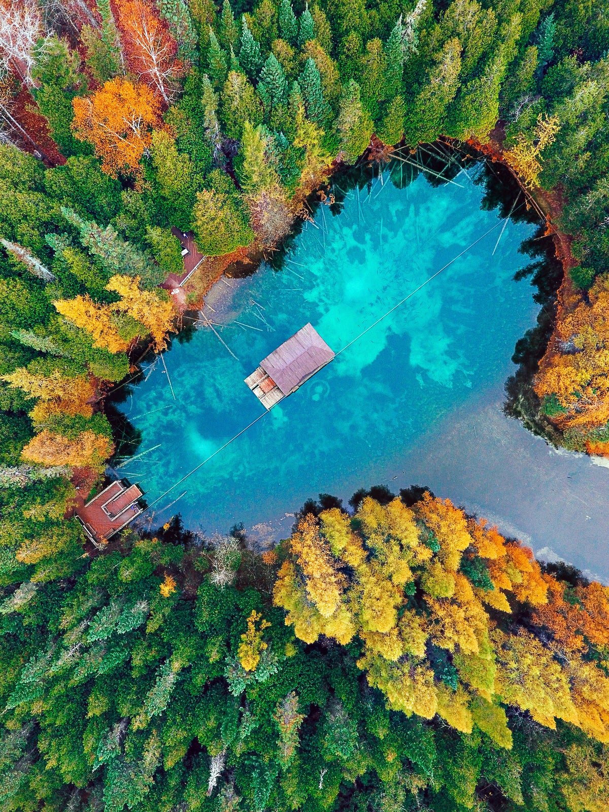
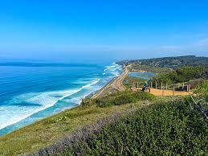
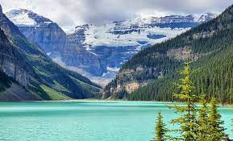

Destinations
Niki's Thoughts
There are many beautiful places to visit in the world. From near and far, here are a few of my favorite places and places I would like to visit in the future.
United States
-
Northern Michigan
From parks like the Sleeping Bear Dunes National Lakehshore to the most beautiful sights in the Upper Peninsula northern Michigan in the summertime is incomparable. If you are in Ann Arbor, you should definitely take a day to check it out. Tons of places like traverse city and mackinaw island are Michigan staples.
 -
Torrey Pines State Park, San Siego
San Diego is such a great city. From great food to great weather one place I was not expecting to love as much was the hiking. I couldn’t be more wrong. What a beautiful hike down to the shore. I greatly recommend.
 -
Alaska
I have never been here but something just seems so pristine about Alaska’s nature and its beauty. I love stars and Alaska is a great place for stargazing and seeing the northern lights.

-
Hawaii
Hawaii might have been my favorite place ever. I say that about a lot but truly I have never felt at such peace than when I was hearing the waves crash along the shore and eating monkey break in a little cafe. If it isn’t obvious I love warm weather, and this was absolutely perfect. I tried surfing here, and there’s volcanos. I really would like to come back here.

-
Vermont
Vermont is one of those places that people never think of when thinking about where they should plan their next vacation. I never would have either if I did not have a friend living there. I was in awe of its beauty. The trees; Quichee Jorge- Tons of natural beauty I never even knew existed. A true gem in the U.S.

-
Wyoming
I have never been here but I’m a national park lover and know that Yellowstone and tons of other parks are located here so would love to visit as well.

Abroad
For the world locations I haven’t been to any of them so I don’t have much to say. Based on the beauty of the pictures and positive testimonies I have heard I think all of these locations will be amazing to visit and see in all of their glory. I’ll give a short summary for each but let the pictures speak for themselves.
-
Banff
Lake Louise in Baniff is absolutely magnificent. For nature lovers and those who appreciate pristine beauty this is a must-see.
 -
Africa
What more can I say? Incredible wildlife and the opportunity to see a whole new world. Must visit place and I am hoping to go after I graduate next year.

-
Italy
I went to Italy for a few days in high school and I had such an unforgettable time. Going with friends, we got to take a pasta making class and a dance class and it was so fun. We visited Florence and Venice and seeing the canals and unique archetecture was very cool. I would like to visit Rome and see more culutral sights if I could go again.

-
Greece
I think of Mamma Mia and the incredible coastline when I think of Greece. The food is probably amazing and the vibes seem magical.